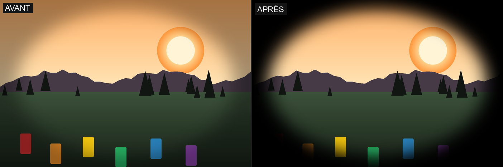
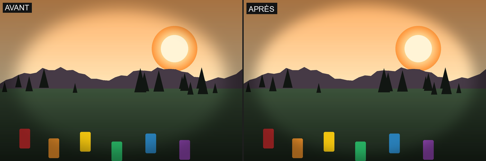
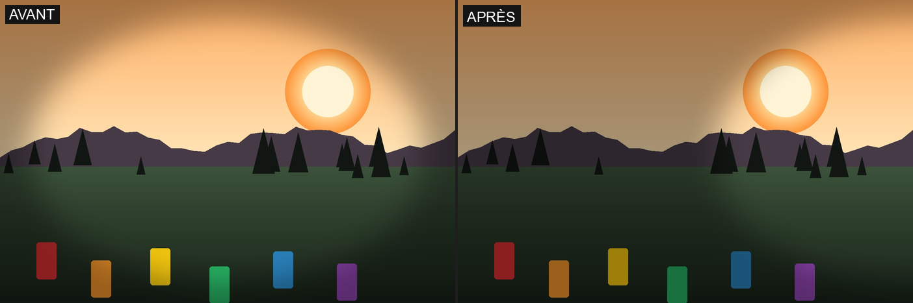
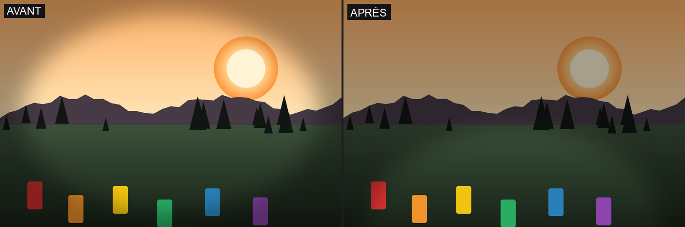
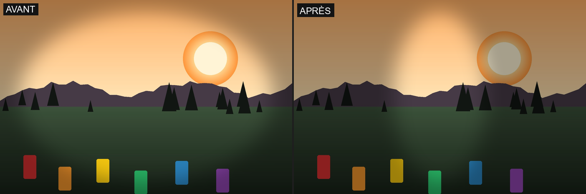
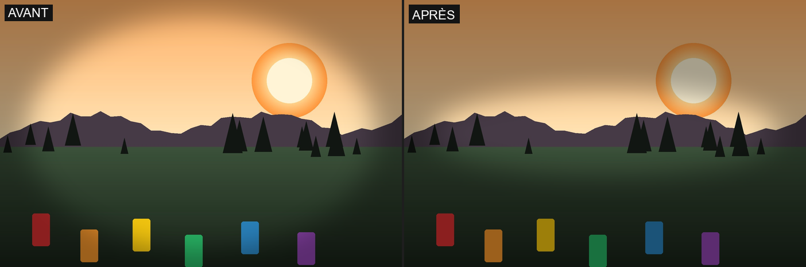
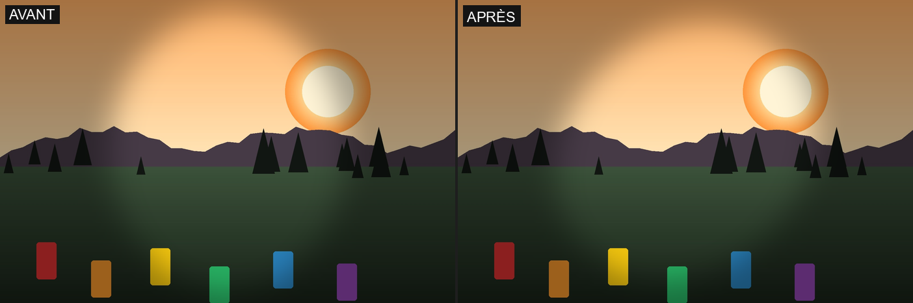
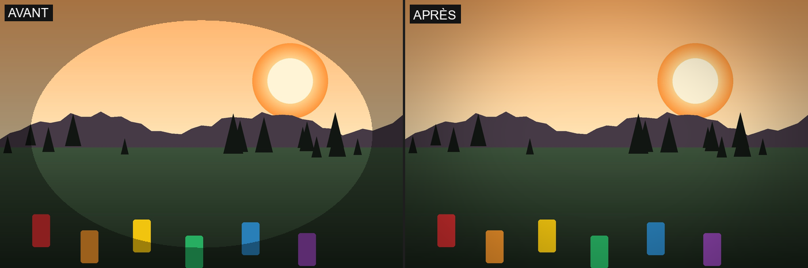
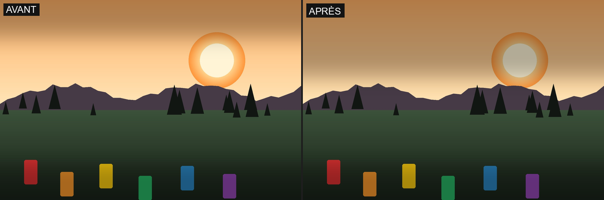
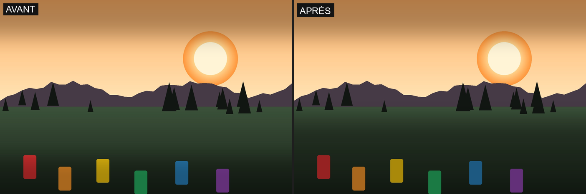

4.7 Vignettage
Moteur : une forme (ellipse ou bande), positionnée/dimensionnée/pivotée dans un repère centré sur elle, définit une zone « intérieure » épargnée ; à l'extérieur, l'image est assombrie (ou éclaircie) progressivement, la transition étant adoucie par flou et façonnée par une courbe de progressivité.
Vignettes
| Vignette | Effet |
|---|---|
| Neutre | Aucune transformation. |
| Round Central | Ellipse centrée couvrant environ 85 % du cadre (rayons égaux), assombrissement jusqu'à 35 % vers les coins/bords, transition douce (adoucissement 12 %), courbe de progressivité modérée. Le vignettage circulaire classique. |
| Linear Top+Bottom | Bande horizontale claire couvrant les 60 % centraux de la hauteur, assombrissement jusqu'à 30 % sur les bandes hautes/basses (20 % chacune), même douceur de transition. Un effet « letterbox » assombri en haut et en bas. |
Réglages manuels
10 réglages au total ; 8 sont communs aux deux formes (Intensité, Progressivité, Centre X/Y, Rotation, Adoucissement), 2 sont propres à l'ellipse (Rayon X/Y) et 2 à la bande (Décalage haut/bas).
- Intensity (
intensity, 0..1) — force maximale de l'assombrissement à l'extérieur de la forme.

- Progressivity (
progressivity, 0..1) — façonne la courbe de transition : plus bas, la coupure est plus nette/abrupte ; plus haut, le dégradé est plus progressif.

- Center X (
center_x, -0,5..1,5) — position horizontale du centre de la forme (0,5 = centre de l'image ; la plage dépasse volontairement [0,1] pour pouvoir décentrer la forme jusqu'à moitié hors cadre).

- Center Y (
center_y, -0,5..1,5) — position verticale du centre, même convention.

- Radius X (
radius_x, 0,05..2,0) — demi-largeur de l'ellipse (Round Central uniquement).

- Radius Y (
radius_y, 0,05..2,0) — demi-hauteur de l'ellipse (Round Central uniquement).

- Rotation (
rotation_angle, -180..180°) — pivote la forme autour de son centre (sans effet visible sur un cercle parfait — illustré ici sur une ellipse allongée pour rendre la rotation perceptible).

- Feather Width (
feather_width, 0..40 % de la petite dimension de l'image) — largeur du flou de transition : 0 = bord net, valeurs élevées = transition très douce et étalée.

- Top Offset (
top_offset, 0,05..1,5, Linear Top+Bottom uniquement) — distance du centre au bord haut de la bande claire : plus petit, plus la bande assombrie du haut est large.

- Bottom Offset (
bottom_offset, 0,05..1,5, Linear Top+Bottom uniquement) — même réglage pour le bord bas.
